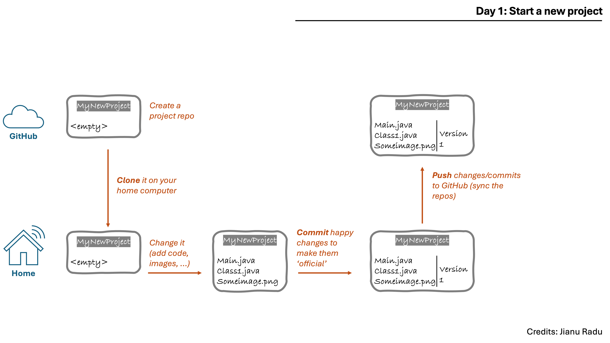
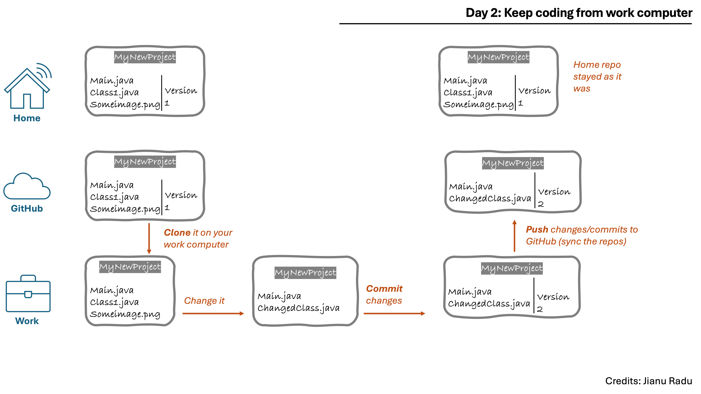
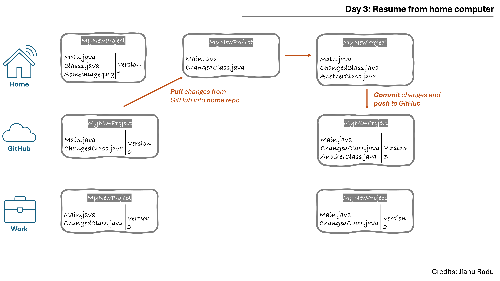
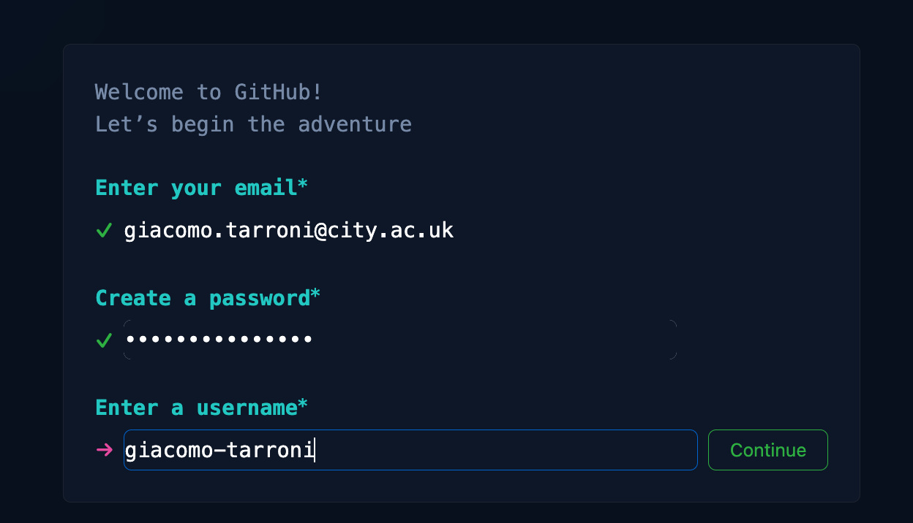
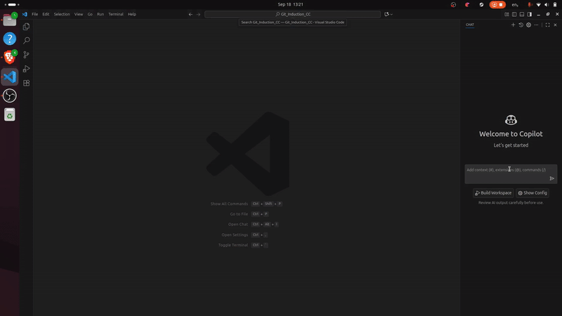
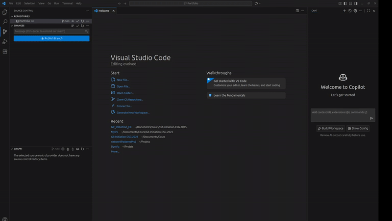
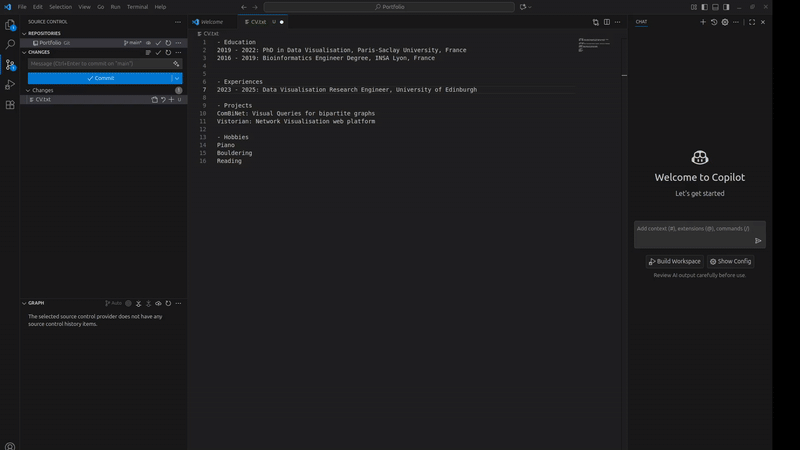
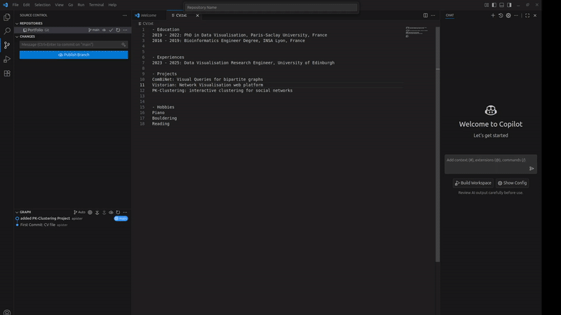
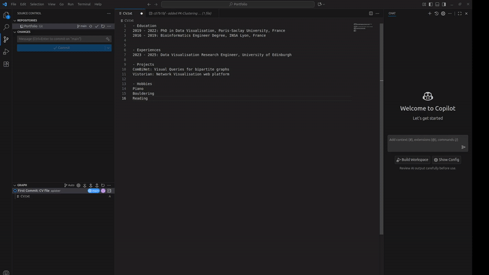

Latest version by: Alexis Pister
Original materials by: Radu Jianu and Giacomo Tarroni
Date: 20 Sep 2025
git is an open source versioning software: it allows you to store and back-up the code you write as part of a software project; it will also monitor and record changes you make to your code and allow you to earmark versions of your project - states of your code at a given time. This way, you can track how your project evolves over time (e.g., see changes made between versions), and revert back to a previous version whenever necessary (e.g., if you messed something up).
At the heart of any project is a repository (repo in short) - you can think of this as a folder associated with your project and monitored/managed by git. The repository may contain code, regular text files, images and other project resources. It also contains some hidden files that git uses to manage versions and changes.
A repository can live on your computer or on the web. GitHub provides online space for people who want to create and store repositories (i.e., software projects) online and is configured to work with git. Note the difference between git - the software that implements the versioning control of a project - and GitHub - just an online space where git-managed projects can live.
Sometimes it is desirable to have the same project available in multiple places: on your office machine, on your personal computer, and on GitHub for safe keeping. This can be achieved by "cloning": a project repository that exists somewhere else (for instance on GitHub) can be cloned on your computer. Of course, it is desirable that the different clones of a repository are in sync, that changes to one version are mirrored into the others. This is managed manually with push and pull operations: if you suspect that a change was made to the main repository (ex: on GitHub) you can pull these changes onto your machine; after you make your own changes to the code you push those changes to the main repository.
Finally, what constitutes a 'change' is also managed manually. Since code development is quite messy and involves repeated trial and error we don't want to count any small edit we do as a code change that git should record. Instead, we can choose when to earmark a code-development point as worthy of git management by doing a 'commit'. Upon a commit git will essentially save the state of the project at that time and allow you to restore the project to that point a later date if you need to. You can think of this as hitting the save button in Word or Photoshop.
It is important to note that only committed changes can be pushed or pulled from a repository! Thus the typical operations one would do when initiating a change to one's code are:
It may help you to think of git and GitHub as a more manual analogue to Google Drive or Microsoft One Drive. These services allow you to have synchronized directories on multiple devices and the cloud: files are duplicated across multiple devices and changes made to those files on any device are mirrored onto the others. This is similar to how git/GitHub work with the distinction that changes need to be committed and manually synchronized via pushing and pulling (though changes also need to be saved before Google or Microsoft mirror them across devices). One of the advantages of git is that it allows you to revert your project back to any past commit point. Another one is that it allows multiple developers to work on the same project simultaneously by managing changes through branching and merging, helping to resolve conflicts and keep the project coordinated (something we won't likely experiment with in Creative Coding, but that you will definitely encounter in your career as programmers).
You want to start a new project on your home computer, so you create a new project 'repository' (in short repo) on GitHub. Think of this as an empty directory online. You can't write code on GitHub so this is really just to reserve online space to store and manage your project. You then clone your repository onto your work computer. This will create a directory on your computer that mirrors the one online. You can start adding and modifying code files into that directory. At the end of the day or whenever you are happy with how your project progressed, you commit all changes you've made. This sort of saves those changes and earmarks the state of the project at that time as a version - at this point this only happens on your work computer. You can continue making new changes on your work computer and committing the ones you are happy with. At some point though you will probably want to save all those changes and versions to your online repository too. You run a push command - this will synchronize the two repos; all changes and version you created on your computer will be mirrored onto GitHub.

Next day you decide to continue the project from work. You can clone your repo on your work computer. This will take the project in its current state and copy it onto your work computer. You can then make changes, commit the ones you are happy with, and at the end of the day push all of them back to GitHub.

The next day, at home again, you would pull the repo onto your home computer to update your home-version of the repo with all the changes you had made at work the day before. Then you can continue to develop the project in the same way. Notice you didn't have to clone the repo this time, since you already had it on your computer: you simply needed to fetch (pull) the latest changes.

Let's now install git/GitHub on your computer.
Create a GitHub account linked to your City email address: Navigate to a www.github.com and follow instructions under the 'Sign Up' button. It should be straightforward: you will need to provide an email, a password, and a username. Make sure to use your City email address and provide a username that resembles your real name:

Install VS Code: VS Code is a widely used code editor that has integrated Git capabilities. We will see how to use Git/Github in a VSCode project. To install VS Code navigate to this link and download the installer based on your operating system. Once the download finishes, install the application. In Windows you would launch the downloaded executable file; in Mac OS you would first drag the downloaded file into the Application folder, then double click it there and select open to allow it to run.
Install Git: To use Git on VS Code you first need to install Git. You can find the installer on this link. Download the installer based on your operating system. For Windows, the Windows/x64 Setup link is the default for most computer. Download and run the .exe file to install Git, and do not change the default values of the installer. For Mac, the homebrew installation is preferred. Install homebrew with the command "brew install git"
Initialize a Git project in VS Code First you need to create a Folder (for example named “Portfolio”) somewhere in your computer. In VSCode, go to File > Open Folder, and select the folder to open the project. Select the left side menu dedicated to Git and click “Initialize the repository” to initialize the local Git repository.

Create a file and commit the changes. The first step is to create a new file in VS code, for example for your CV. You can do this by clicking on explorer menu (CTRL+SHIFT+E) and then "new file". Name the file "CV.txt" for your CV, and add some content in the file, such as your experiences and hobbies for your CV. To save the changes you did with Git, click to the source control menu on the right (CTRL+SHIFT+G). You first need to stage the changes by clicking on the “+” near your file name. This means that you want the change related to this file to be saved in your next commit. Then, write a commit message, such as “first commit” in the commit box, and commit the changes by pressing the “Commit” button.


Create a file and commit the changes. The first step is to create a new file in VS code, for example for your CV. You can do this by clicking on explorer menu (CTRL+SHIFT+E) and then "new file". Name the file "CV.txt" for your CV, and add some content in the file, such as your experiences and hobbies for your CV. To save the changes you did with Git, click to the source control menu on the right (CTRL+SHIFT+G). You first need to stage the changes by clicking on the “+” near your file name. This means that you want the change related to this file to be saved in your next commit. Then, write a commit message, such as “first commit” in the commit box, and commit the changes by pressing the “Commit” button.
Publish your project on Github by clicking on the github button on the repository menu and by selecting publish to Github public repository.

Create a new commit and push it to Github. Now that our project is synced with a Github repository, you will also need to push your commits after your changes to sync up your local repository with the Github (remote) repository. For that, modify your CV file and add one row. Next, commit your changes as before. At this step you Git repository is up to date, but the remote one is not updated yet. To do that, you need to push your commit to Github. In VS Code, in the source control Menu, you simply have to click on the Sync-up button.

Git is a very complex tool, and while with the above example we have seen the basic clone/pull-commit-push cycle, we have only scratched the surface. Please take your time, in the next few weeks, to delve deeper into GitHub Desktop. You can start from this video tutorial
GitHub Desktop is only one way of using git/GitHub. The most common alternatives are the following: